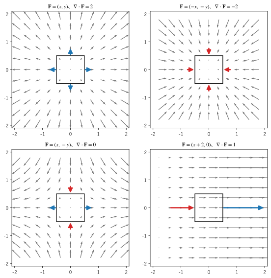

第 6 章 発散
発散は、ベクトル場がある点から「湧き出している」か「吸い込まれている」かを表すスカラー場である。この章では、流れの中に置いた微小な直方体から出ていく正味の量を考えて発散を導き、計算例と図で意味を確かめる。最後に、発散が 0 の場の性質を説明する。
流れと流束
発散の考え方は、流体の流れで考えると分かりやすい。空間の各点での流体の速度を表すベクトル場を \(\bm{v}(x, y, z)\) とする。
流れの中に、小さな平らな面（面積 \(\Delta S\)、単位法線ベクトル \(\bm{n}\)）を置く。単位時間に面を通り抜ける流体の体積は、速度の法線方向の成分 \(\bm{v} \cdot \bm{n}\) に面積を掛けた
である。面に沿った成分は面を通り抜けないので、法線方向の成分だけが効く。\(\bm{v} \cdot \bm{n}\) が負なら、\(\bm{n}\) と逆向きに通り抜ける。このように、面を通り抜ける量を流束（flux）という。曲面全体の流束は、曲面を小さな面に分けて足し合わせた面積分になる（第 12 章）。この章では、小さな平らな面の流束だけを使う。
速度以外のベクトル場 \(\bm{F}\) でも、\((\bm{F} \cdot \bm{n}) \, \Delta S\) を同じように流束と呼ぶ。電場の流束、熱の流れの流束などである。
微小な直方体からの流出量
点 \((x, y, z)\) を 1 つの頂点とし、各辺が座標軸に平行で長さが \(\Delta x, \Delta y, \Delta z\) の小さな直方体を考える。直方体の 6 つの面から外へ出ていく流束の合計（正味の流出量）を求める。
まず、\(x\) 軸に垂直な 2 つの面を考える。
\(x + \Delta x\) の位置にある面：外向きの法線は \(\bm{e}_x\) なので、流出量は \(F_x(x + \Delta x, y, z) \, \Delta y \Delta z\) である。
\(x\) の位置にある面：外向きの法線は \(-\bm{e}_x\) なので、流出量は \(-F_x(x, y, z) \, \Delta y \Delta z\) である。
ここでは、面の上での \(F_x\) の値を、面の 1 つの頂点での値で代表させた。面が十分小さければ、その違いは以下の議論に影響しない。2 つの面を合わせると、1 変数の 1 次近似から
となる。\(x\) の位置で入ってくる量と、\(x + \Delta x\) の位置で出ていく量の差が、正味の流出量になる。\(F_x\) が \(x\) の向きに増えていれば、入る量より出る量が多い。
\(y\) 軸、\(z\) 軸に垂直な面の組も同様なので、直方体の体積を \(\Delta V = \Delta x \Delta y \Delta z\) とすると、正味の流出量は
となる。正味の流出量は直方体の体積に比例し、その比例係数は直方体の位置だけで決まる。
発散の定義
上の比例係数を、ベクトル場 \(\bm{F}\) の発散（divergence）と定義する。
発散は \(\operatorname{div} \bm{F}\) とも書く。ナブラ \(\nabla = (\partial / \partial x, \partial / \partial y, \partial / \partial z)\) と \(\bm{F}\) の形式的な内積の形をしているので、\(\nabla \cdot \bm{F}\) と書く（第 5 章）。ベクトル場から、スカラー場が作られる。
前節の結果から、発散は
つまり「単位体積あたりの正味の流出量」である。
\(\nabla \cdot \bm{F} > 0\) の点では、周りより多く出ていく。その点に湧き出しがある。
\(\nabla \cdot \bm{F} < 0\) の点では、出ていくより多く入ってくる。その点に吸い込みがある。
\(\nabla \cdot \bm{F} = 0\) の点では、入る量と出る量がつり合っている。
ここでは直方体を使ったが、正味の流出量を体積で割った極限は、領域の形によらず同じ値になる。これは第 14 章のガウスの発散定理から導かれる。
なお、\(\nabla \cdot \bm{F}\) と \(\bm{F} \cdot \nabla\) は別物である。\(\nabla \cdot \bm{F}\) はスカラー場だが、\(\bm{F} \cdot \nabla = F_x \partial / \partial x + F_y \partial / \partial y + F_z \partial / \partial z\) は場に作用する前の演算子である。後者は第 8 章で使う。
発散の計算例
2 次元のベクトル場 \(\bm{F} = (F_x, F_y)\) の発散は \(\partial F_x / \partial x + \partial F_y / \partial y\) である。図 9 に、4 つの 2 次元のベクトル場と、原点を中心とする正方形の各辺を出入りする流れを示す。青い矢印は出ていく流れ、赤い矢印は入ってくる流れを表し、矢印の長さは辺の中点での流れの、辺に垂直な成分の大きさに比例する。


図 9 発散が正・負・0 の 2 次元のベクトル場
ベクトル場 |
発散 |
説明 |
|---|---|---|
\(\bm{F} = (x, y)\) |
\(1 + 1 = 2\) |
原点から放射状に広がる。どの辺からも出ていく。 |
\(\bm{F} = (-x, -y)\) |
\(-1 - 1 = -2\) |
原点に集まる。どの辺からも入ってくる。 |
\(\bm{F} = (x, -y)\) |
\(1 - 1 = 0\) |
上下から入り、左右へ出ていく（よどみ点流れ）。出入りがつり合う。 |
\(\bm{F} = (x + 2, 0)\) |
\(1 + 0 = 1\) |
向きはすべて右だが、右へ行くほど速い。左の辺から入る量より、右の辺から出る量が多い。 |
サンプルの全体：ch06_divergence_fields.py
最後の例のように、矢印がすべて同じ向きでも、流れの向きに沿って大きさが増えていれば発散は正になる。逆に、矢印が広がっていても発散が 0 の場合がある。3 次元の例で確かめる。
\(\bm{F} = \bm{r} = (x, y, z)\) の発散は \(1 + 1 + 1 = 3\) である。
\(\bm{F} = \bm{r}/r^3\)（点電荷の電場や万有引力と同じ形）では、\(\partial (x/r^3) / \partial x = 1/r^3 - 3x^2/r^5\) などから
\[\nabla \cdot \frac{\bm{r}}{r^3} = \frac{3}{r^3} - \frac{3(x^2 + y^2 + z^2)}{r^5} = 0 \qquad (r \neq 0)\]となる。矢印は放射状に広がるが、外へ行くほど \(1/r^2\) で弱くなるため、小さな領域に入る量と出る量がちょうどつり合う。原点ではこの場は定義されない。原点を囲む領域からの流出量が 0 にならないことは第 14 章で扱う。
数値で確かめる
発散が「単位体積あたりの正味の流出量」であることを数値で確かめる。\(\bm{F} = (x^2 y, \ yz, \ xz^2)\) の発散は \(2xy + z + 2xz\) であり、点 \((1, 2, 3)\) では 13 である。この点を頂点とする 1 辺 \(h\) の立方体について、6 つの面の流束を SymPy で厳密に積分し、体積 \(h^3\) で割る。
15def net_outflow(h: sp.Rational) -> sp.Expr:
16 """頂点 P から各辺の長さ h の立方体について、6 つの面から出ていく流量の合計を厳密に計算する."""
17 x0, y0, z0 = P
18 total = sp.Integer(0)
19 # x 軸に垂直な 2 つの面：x = x0 + h では外向き、x = x0 では内向き（符号が負）
20 total += sp.integrate(F[0].subs(x, x0 + h) - F[0].subs(x, x0), (y, y0, y0 + h), (z, z0, z0 + h))
21 total += sp.integrate(F[1].subs(y, y0 + h) - F[1].subs(y, y0), (x, x0, x0 + h), (z, z0, z0 + h))
22 total += sp.integrate(F[2].subs(z, z0 + h) - F[2].subs(z, z0), (x, x0, x0 + h), (y, y0, y0 + h))
23 return total
F = (x**2*y, y*z, x*z**2)
div F = 2*x*y + 2*x*z + z
div F(1, 2, 3) = 13
h 流出量 / 体積 発散との差
1.000 21.500000 8.500000
0.100 13.760000 0.760000
0.010 13.075100 0.075100
0.001 13.007501 0.007501
\(h\) を小さくすると、「流出量 / 体積」は発散の値 13 に近づく。発散との差は \(h\) にほぼ比例して小さくなる。これは、立方体の中心が点 \((1, 2, 3)\) からずれていて、立方体の中の平均的な発散を測っているためである。
サンプルの全体：ch06_box_flux.py
発散のない場
すべての点で \(\nabla \cdot \bm{F} = 0\) となるベクトル場を、発散のない場という。ソレノイダルな場とも呼ぶ。発散のない場では、どの小さな領域でも入る量と出る量がつり合っているので、湧き出しも吸い込みもない。
工学で現れる代表的な例は次の 2 つである。
非圧縮性の流れ：水のように密度がほとんど変わらない流体では、小さな領域に入った体積と同じ体積が出ていく。そのため速度場は \(\nabla \cdot \bm{v} = 0\) を満たす。一般の流体では、発散 \(\nabla \cdot \bm{v}\) は体積が膨張する割合を表す。
磁場：磁束密度 \(\bm{B}\) は常に \(\nabla \cdot \bm{B} = 0\) を満たす。磁石の N 極だけを取り出せない（磁荷が存在しない）ことの表れである（第 17 章）。
発散の性質と今後の展開
発散は偏微分の和なので、線形性 \(\nabla \cdot (a\bm{F} + b\bm{G}) = a \nabla \cdot \bm{F} + b \nabla \cdot \bm{G}\)（\(a, b\) は定数）が成り立つ。スカラー場との積の発散などの公式は第 8 章でまとめる。
発散は、後の章で次のように使われる。
この章のまとめ
小さな面を通り抜ける量（流束）は \((\bm{F} \cdot \bm{n}) \, \Delta S\) である。
発散 \(\nabla \cdot \bm{F} = \partial F_x / \partial x + \partial F_y / \partial y + \partial F_z / \partial z\) は、単位体積あたりの正味の流出量を表すスカラー場である。
発散が正の点には湧き出し、負の点には吸い込みがある。
矢印の向きの広がりだけでは発散は決まらない。大きさの変化も合わせて考える必要がある。
発散のない場は、非圧縮性の流れや磁場として現れる。